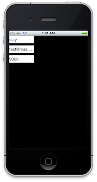

Models
We've covered views and controllers, but where's the love for the M in the MVC equation? Well, wait no more, because we're going to dive into models. We've written a lot of code for the VC parts already, but in practice your models should actually be the "fattest" of the three.
In RubyMotion, there are two big components to models: CoreData and...everything else. CoreData is an ORM of sorts for iOS, sort of like ActiveRecord in Rails-land. It's an incredibly powerful framework but it deserves a chapter onto its own. We're going to be covering "everything else" important in RubyMotion, so let's get to it.
Model-T
Models are plain-old Ruby objects. We can use the normal Ruby attr_[accessor/reader/writer] functions to declare methods which map to instance variables, which is all you really need sometimes. Take a basic User object for example:
class User
attr_accessor :id
attr_accessor :name
attr_accessor :email
end
Now we can manipulate objects like so:
@user = User.new
@user.name = "Clay"
@user.email = "clay@mail.com"
That's cool, but if we're dealing with some kind of remote API we're probably going to be handed some data from which to parse this User. There are a number of ways to do this, but here's my personal favorite:
class User
PROPERTIES = [:id, :name, :email]
PROPERTIES.each { |prop|
attr_accessor prop
}
def initialize(attributes = {})
attributes.each { |key, value|
self.send("#{key}=", value) if PROPERTIES.member? key
}
end
end
So now we can do a neat trick like this:
server_hash = { name: "Clay", email: "my@email.com", id: 1000 }
@user = User.new(server_hash)
@user.name
=> Clay
This style also lets us add more properties with ease by simply extending the PROPERTIES constant. It's also useful if we ever need to iterate through the attributes of our models, such as when we...I don't know, serialize them. Oh, sorry, was that foreshadowing?
NSCoding
So now we have a scalable infrastructure for models and we're getting some data from the server. Instead of making API calls every time we want to retrieve that data, we want to check if we have a local copy first (a.k.a. the "cache"). We could write our own custom saving code that writes our objects to a file or something, but there's a better idea.
The NSUserDefaults object exists as a persistent key-value store. Typically, we use the instance of NSUserDefaults.standardUserDefaults as our object, like this:
@defaults = NSUserDefaults.standardUserDefaults
@defaults["one"] = 1
# somewhere else, next time we run the app
@defaults["one"]
=> 1
Pretty nice right? The values in NSUserDefaults are saved as long as your app is installed; if you want to hasten that process, you can call NSUserDefaults.resetStandardUserDefaults to purge all entries.
Now, there's one caveat: we can't store any old object in NSUserDefaults. We can either store primitives (like strings, integers, and hashes), or we can use raw data/bytes. Since our User object isn't a primitive, we have to use the data method. How does that work?
We can put our model through a process called "archiving" using NSKeyedArchiver. This class takes an object and creates an instance of NSData that NSUserDefaults can save. The objects eligible for archiving are known as "NSCoding compliant". Basically that means they implement two methods which define how to serialize and unserialize themselves using a standard API. If your models don't implement these methods, they can't be archived.
The two methods to comply with NSCoding are initWithCoder: (used for loading an object) and encodeWithCoder: (used for saving an object). Both of these methods pass an instance of NSCoder, which allows us to encode primitive object types for given keys. NSKeyedArchiver and its sibling NSKeyedUnarchiver use these coders to convert an archived object to and from its saved form.
The two methods should sort of be mirror-images: encodeWithCoder should encode all of the object's values for some set of keys, and then initWithCoder should set an object's values via decoding with those same keys.
Let's just go through an example and you'll get the idea. Note how the two methods basically do the opposite of each other:
class Post
attr_accessor :message
attr_accessor :id
# called when an object is loaded from NSUserDefaults
# this is an initializer, so should return `self`
def initWithCoder(decoder)
self.init
self.message = decoder.decodeObjectForKey("message")
self.id = decoder.decodeObjectForKey("id")
self
end
# called when saving an object to NSUserDefaults
def encodeWithCoder(encoder)
encoder.encodeObject(self.message, forKey: "message")
encoder.encodeObject(self.id, forKey: "id")
end
end
So what the heck does this let us do again? It allows you to convert any object into data that can be saved into NSUserDefaults. Let me show you:
defaults = NSUserDefaults.standardUserDefaults
post = Post.new
post.message = "hello!"
post.id = 1000
post_as_data = NSKeyedArchiver.archivedDataWithRootObject(post)
defaults["saved_post"] = post_as_data
# later on, we want to load this post:
post_as_data = defaults["saved_post"]
post = NSKeyedUnarchiver.unarchiveObjectWithData(post_as_data)
These encodeObject and decodeObjectForKey are pretty cumbersome, so let's take advantage of our API model structure and make life easy:
class User
...
def initWithCoder(decoder)
self.init
PROPERTIES.each { |prop|
value = decoder.decodeObjectForKey(prop.to_s)
self.send((prop.to_s + "=").to_s, value) if value
}
self
end
# called when saving an object to NSUserDefaults
def encodeWithCoder(encoder)
PROPERTIES.each { |prop|
encoder.encodeObject(self.send(prop), forKey: prop.to_s)
}
end
Nice, right? One of the biggest pains of Objective-C is that adding new attributes to models is non-trivial. This sort of "magical" Ruby code reduces the friction of making changes to our code.
So now that we have some really robust and flexible models, let's put some stuff on the screen for a change.
Key-Value Observing Example
I think Key-Value Observing (KVO for short) is really freaking cool and will save you a ton of time.
In RubyMotion, objects have the ability to "observe" arbitrary properties of other objects. So let's say I'm observing a user's name; when that user's "#name" property changes values, I automatically get a callback with the new value. There's no custom infrastructure or delegation you have to write, it just works.
The practical example of this is having a view tied to a property of an object, like a UILabel which should always represent @user.name. When the name changes, the label automatically updates and stays in sync with the model. We're going to implement something like that right now.
Create a new RubyMotion project, like motion create KeyValueFun. You also need to make ./app/user.rb, which is where we'll play with our User model.
There's one more thing you need to do: use BubbleWrap.
BubbleWrap is a collection of idiomatic Ruby wrappers for the iOS SDK. A lot of Apple's APIs use a system of calling pre-established methods on a callback object. This is preferable on Objective-C but not so much in Ruby, where there have always been anonymous functions to pass around. Thus, many of BubbleWrap's wrappers are just moving such callback method into inline lambdas and blocks. It uses such a wrapper to make Key-Value Observing really simple.
How do we install third-party libraries in RubyMotion? Well, we can either clone the repo and add it to our directory structure, or we can use RubyGems. The latter makes third-party code much easier to install and maintain, so I always reccomend checking if a new RubyMotion library can be installed as a gem (and if it isn't, then fork and fix it!)
In your terminal, run gem install bubble-wrap. This will install BubbleWrap to your computer like any other gem; however, an error will be thrown if you try to require "bubble-wrap" in a non-RubyMotion project.
require "bubble-wrap" in the Rakefile, like so:
$:.unshift("/Library/RubyMotion/lib")
require 'motion/project'
require 'bubble-wrap'
...
Now to the real code. In user.rb, you can either use the robust, API-friendly User class outlined above or use the more concise (but still workable) version:
class User
attr_accessor :id
attr_accessor :name
attr_accessor :email
end
In AppDelegate, we're going to create a label for each of the User's fields: id, name, and email. Then we'll start observing those attributes on our object and update each label accordingly. Sound simple? Well, let's walk through it anyway.
class AppDelegate
include BW::KVO
attr_accessor :user
...
In order to use BubbleWrap's nice KVO wrapper (we'll get to that in a second), we need to include its methods. You must do this for any object which observes properties. We also added a #user attribute, which will make debugging easier. Now, about those views:
def application(application, didFinishLaunchingWithOptions:launchOptions)
@window = UIWindow.alloc.initWithFrame(UIScreen.mainScreen.applicationFrame)
@window.makeKeyAndVisible
@name_label = UILabel.alloc.initWithFrame([[0, 0], [100, 30]])
@window.addSubview(@name_label)
@email_label = UILabel.alloc.initWithFrame([[0, @name_label.frame.size.height + 10], @name_label.frame.size])
@window.addSubview(@email_label)
@id_label = UILabel.alloc.initWithFrame([[0, @email_label.frame.origin.y + @email_label.frame.size.height + 10], @name_label.frame.size])
@window.addSubview(@id_label)
...
We add all of our labels to the @window, aligning them vertically. You could make the presentation a lot prettier, but we're trying to be quick here.
Finally, the fun part: observe:
...
self.user = User.new
["name", "id", "email"].each { |prop|
observe(self.user, prop) do |old_value, new_value|
instance_variable_get("@#{prop}_label").text = new_value
end
}
true
end
end
The KVO observe function is of the form observe(#<object to be observed>, "the property") do ..... We use a nice Ruby trick here to reduce duplication with #each, but if we flatten this function out for one property it looks like:
observe(self.user, "name") do |old_value, new_value|
instance_variable_get("@name_label").text = new_value
end
Cool, right? Now you need to remember that if we re-assign self.user, this will stop working because we're specifically only observing whatever self.user happens to be at that point in time. So later if we do self.user = some_other_user, these observations will stop.
How do we test it? rake and head over to the debug console. If we dig around correctly, we should be able to get our User object and start playing with it:
$ rake
...
(main)> delegate = UIApplication.sharedApplication.delegate
=> #<AppDelegate .... >
(main)> user = delegate.user
=> #<NSKVONotifying_User>
(main)> user.email = "test@mail.com"
=> "test@mail.com"
(main)> user.name = "clay"
=> "clay"
(main)> user.id = "9000"
=> "9000"
This should produce a result like this:

Wrapping Up
We've been playing around with the "sexy" parts of iOS for a bit, but at the end of the day a solid model architecture and KVO are just as important to the user experience. What all did we actually learn?
- Models are plain Ruby objects; add properties to them using the
attr_[accessor/reader/writer]methods - Use a constant like
PROPERTIESto define your attributes, it makes loading from a hash ininitializereally easy. NSUserDefaultsis a persistant store for primitives; useNSKeyedArchiverandNSKeyedUnarchiverto store your models. This requires you to implementinitWithCoder:andencodeWithCoder:in your class.- Key-Value Observing lets your objects get notified of changes in another object's properties.
include BW::KVOand use theobservefunction for simple Key-Value Observing.